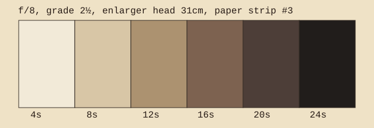

EXPOSURE TEST STRIP — no guessing ticket
negative carrier locked / easel 8×10 / lens f/8

- Focus on scrap paper with lens wide open. Stop lens down to f/8 afterward.
- Set contrast filter before testing. A grade change invalidates the strip.
- Cover five-sixths of the strip with black card. Expose first band for 4 seconds.
- Slide card one band at a time and expose 4 seconds each slide. Bands become 4, 8, 12, 16, 20, 24 seconds.
- Develop for the full standard time. Do not snatch early because band 20 looks dramatic.
- Pick the first band with convincing black and separated highlight detail. If two bands argue, print between them.
Record enlarger height in centimeters. Raising the head later changes everything except your memory of being certain.
back to drawer D